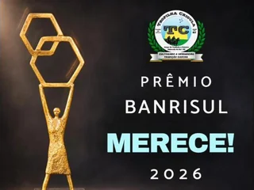
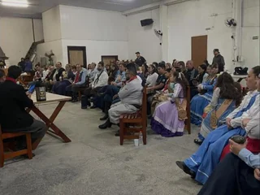
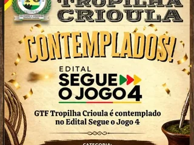

Linha do Tempo
O que aconteceu, mês a mês
Do mais recente ao mais antigo. Role a página para voltar no tempo, ou filtre por ano e departamento.
Ano
Departamento
Nenhum registro para esta combinação.
2026
Novembro
Prêmio Banrisul Merece! RS 2026
Depto. de ProjetosR$ 50.000,00. Uma das 50 entidades premiadas do RS e a única tradicionalista da 12ª RT.

Outubro
Assembleia Geral Ordinária 2026
Patronagem (Institucional)Alteração estatutária, prestação de contas e eleição da patronagem 2026/2028.

Formatura da 17ª turma do Curso de Fandango
Depto. ArtísticoBaile de formatura em 31 de outubro de 2026.
11º Galeto Solidário
Depto. SocialAlmoço comunitário, ação social recorrente do Tropilha.
Setembro
45ª Semana Farroupilha
Depto. CulturalDe 12 a 20 de setembro, com galpão aberto no Parque Jayme Caetano Braun e hasteamento das bandeiras em 15 de setembro.
Bicampeão do Concurso Cultural da Semana Farroupilha
Depto. CulturalSegundo 1º lugar consecutivo.
Participação na Inter-Regional do ENART 2026
Depto. ArtísticoBruno Maciel representou o Tropilha na etapa Inter-Regional do ENART.
Agosto
17ª edição do Curso de Fandango
Depto. ArtísticoAulas aos domingos a partir de 9 de agosto.
1º Curso de Fandango Avançado
Depto. ArtísticoMilonga, chote e chamamé, com início em 30 de agosto.
3º Rodeio Artístico do CTG Sentinela do Rio Grande
Depto. ArtísticoEm Glorinha.
Julho
ENART 2026: Inter-Regional de Declamação
Depto. ArtísticoBruno Maciel representou o Tropilha na 2ª Inter-Regional, em Bom Princípio.

Junho
Canchas de bocha e bolita
Depto. de CapataziaObra do projeto Raízes da Tradição.
Fundo Social Sicredi 2026: Raízes da Tradição
Depto. de ProjetosProjeto selecionado, com R$ 5.300,00 para as canchas de bocha e bolita.
Chamamento Público 02/2026: manutenção de espaços culturais
Depto. de ProjetosPNAB, R$ 60.000,00.
Chamamento Público 03/2026: Prêmio a Pontos de Cultura
Depto. de ProjetosPNAB/Cultura Viva, R$ 18.400,00.
Maio
4ª Integração Tradicionalista Tropilhana
Patronagem (Institucional)Encontro de associados em 24 de maio de 2026.
1ª Oficina de Truco
Depto. de EsportesEm 30 de maio, com 8 horas de atividade e cerca de 20 participantes.
Abril
Área cedida para a sede própria
Depto. de CapataziaA Prefeitura de Sapucaia do Sul cedeu a área para a sede própria.
Março
16ª edição do Curso de Fandango
Depto. ArtísticoTurma 2026/1, com 64 formandos.
Fevereiro
CTG na Escola
Depto. de ProjetosR$ 18.000,00 (SEDAC/RS e MTG/RS).
2025
Novembro
Oficina de brinquedos na ACAPASS
Depto. SocialTarde de brincadeiras gaúchas, em novembro de 2025.
Maio
Integração Tradicionalista Tropilhana
Patronagem (Institucional)Encontro de associados em maio de 2025.
Março
Baile dos 10 anos do Tropilha
Patronagem (Institucional)Comemoração em 15 de março de 2025.
Mês a confirmar
14ª e 15ª edições do Curso de Fandango
Depto. ArtísticoTurmas 2025/1 e 2025/2, no Salão da Igreja Luterana.
Oficinas de gaita e violão gaúcho
Depto. ArtísticoMusical Tropilha da Canção.
2º Acampamento da Declamação de Tapes
Depto. ArtísticoParticipação da Invernada de Declamação.
Chama's da Poesia, CTG Chama Nativa
Depto. ArtísticoParticipação da Invernada de Declamação.
1º lugar no Concurso Cultural da Semana Farroupilha
Depto. CulturalNa 44ª Semana Farroupilha de Sapucaia do Sul.
44ª Semana Farroupilha
Depto. CulturalParticipação na programação oficial do município.
Gestão Cultural 2025/26
Depto. CulturalPrendas de Faixa e Peões de Crachá.
Cavalgada do Trabalhador
Depto. CampeiroParticipação do Tropilha.
Edital 01/2025: Cultura Viva
Depto. de ProjetosPremiação de R$ 41.400,00 a Ponto de Cultura.
SEDAC nº 21/2025: Avançar Tchê
Depto. de ProjetosPrêmio Tradicionalismo Gaúcho de R$ 40.000,00.
SEDAC nº 22/2025: Invernadas Culturais II
Depto. de ProjetosR$ 47.859,56.
Palestra Avançar Tchê, da Secretaria Estadual de Cultura
Patronagem (Institucional)Participação no 35 CTG, em Porto Alegre.
Moção de Congratulações pelos 10 anos
Patronagem (Institucional)Concedida pela Câmara de Vereadores de Sapucaia do Sul.
Visitas de escolas ao galpão
Depto. SocialEMEB Profª Silvania Regina de Ávila Alves e Escola Infantil Canguru.
Galeto Solidário 2025
Depto. SocialAlmoço comunitário solidário.
Campanha do Cobertor 2025
Depto. SocialCada R$ 25 doados viram um cobertor popular.
2024
Novembro
Oficina de brinquedos na ACAPASS
Depto. SocialTarde de brincadeiras gaúchas com crianças acolhidas na Casa de Passagem.
Julho
Integração Tradicionalista Tropilhana
Patronagem (Institucional)Encontro de associados em julho de 2024.
Junho
Formatura da 12ª turma do Curso de Fandango
Depto. ArtísticoBaile de formatura em 1º de junho de 2024.
Abril
Palestra de Indumentária Gaúcha
Depto. CulturalAberta à comunidade, sobre a história e o uso da pilcha (Lei nº 8.813/1989).
Fevereiro
Edital de Doação nº 001/2023: 670 itens recebidos
Depto. de ProjetosPrefeitura de Sapucaia do Sul; avaliação de R$ 61.602,50.
Mês a confirmar
13ª edição do Curso de Fandango
Depto. ArtísticoTurma 2024/2, com cerca de 60 formandos.
ENART 2024: campeão estadual de Melhor Acampamento
Depto. ArtísticoReconhecimento à organização e à hospitalidade da entidade.
Apoio aos desabrigados das cheias
Depto. SocialArrecadação, marmitas e distribuição a famílias atingidas.
Semana Farroupilha 2024
Depto. CulturalParticipação nos festejos farroupilhas do município.
PNAB, Edital 12/2024: oficinas de gaita e violão
Depto. de ProjetosR$ 19.497,15.
PNAB, Edital 14/2024: Curso de Fandango
Depto. de ProjetosSubsídio de R$ 30.000,00.
Segue o Jogo 2: Bocha Campeira
Depto. de ProjetosR$ 9.659,00 em equipamentos esportivos.
Baile de aniversário de 9 anos
Patronagem (Institucional)Comemoração com jantar e baile.
Patronagem 2024/2026
Patronagem (Institucional)Início da gestão atual, supervisionada pela Assembleia Geral e pelo Conselho de Vaqueanos.
Natal Solidário 2024
Depto. SocialVisitas a idosos em acolhimento.
Galeto Solidário 2024
Depto. SocialAlmoço comunitário solidário.
2023
Novembro
Integração Tradicionalista Tropilhana
Patronagem (Institucional)Encontro e palestra para associados, em novembro de 2023.
Agosto
Certificação como Ponto de Cultura Federal
Patronagem (Institucional)Certificado do Ministério da Cultura, ID 9489, de 09/08/2023.
Mês a confirmar
Recebimento da Chama Crioula
Depto. CulturalParticipação do Tropilha na recepção da Chama Crioula.
Gestão Cultural 2023/24
Depto. CulturalPrendas de Faixa e Peões de Crachá.
Semana Farroupilha 2023
Depto. CulturalInício da participação do Tropilha na coordenação artística dos festejos farroupilhas do município.
ENART 2023: campeões da 12ª Região Tradicionalista
Depto. ArtísticoTítulo regional no Encontro Nacional de Arte e Tradição Gaúcha.
11ª edição do Curso de Fandango
Depto. ArtísticoTurma 2023/1.
Baile de aniversário de 8 anos
Patronagem (Institucional)Comemoração com jantar e baile.
Edital de Desfazimento de Bens nº 02/2023
Depto. de ProjetosTribunal de Contas do RS: 11 peças de mobiliário (Lote 14).
Seminário de Elaboração de Projetos
Patronagem (Institucional)Capacitação na sede do MTG, em Porto Alegre.
Conferência Municipal de Cultura
Patronagem (Institucional)Participação da entidade em Sapucaia do Sul.
Parcerias com o 18º BIMT e o Lions Clube Sapucaia Centro
Patronagem (Institucional)Apoio ao Curso de Fandango e a ações da entidade.
Patronagem 2023/2024
Patronagem (Institucional)Gestão da Patronagem 2023/2024.
Natal Solidário 2023
Depto. SocialVisitas a idosos em acolhimento.
2022
Mês a confirmar
10ª edição do Curso de Fandango
Depto. ArtísticoCom o 18º BIMT, aos domingos.
Natal Solidário 2022
Depto. SocialVisitas a idosos em acolhimento.
Galeto Solidário 2022
Depto. SocialAlmoço comunitário em prol de entidades assistenciais.
Patronagem 2022/2023
Patronagem (Institucional)Início da gestão da Patronagem 2022/2023.
2021
Abril
Tropilanche: relatórios mensais
Depto. SocialRegistro mensal das ações de rua, com lanches e marmitas, desde abril de 2021.
Mês a confirmar
1º Galeto Solidário
Depto. SocialPrimeira ação nesse formato, em prol da ACAPASS.
2020
Mês a confirmar
Natal Solidário 2020
Depto. SocialVisitas a idosos em acolhimento.
2019
Mês a confirmar
Natal Solidário 2019
Depto. SocialVisitas a idosos em acolhimento.
2018
Mês a confirmar
Primeiro apoio institucional: Fundo Social Sicredi
Depto. de ProjetosR$ 3.200,00 para o 3º Tropilha em Versos.
Tropilha em Versos, edição 2018
Depto. Artístico3ª edição da oficina de declamação gaúcha.
Oficina de brinquedos e brincadeiras na ACAPASS
Depto. SocialEdição 2018.
Natal Solidário 2018
Depto. SocialVisitas a idosos em acolhimento.
2017
Dezembro
Lei de Utilidade Pública Municipal
Patronagem (Institucional)Lei nº 3.833, de 27/12/2017, declara o Tropilha entidade de utilidade pública municipal.
Mês a confirmar
Tropilha em Versos, edição 2017
Depto. ArtísticoOficina de declamação gaúcha.
Oficina de brinquedos e brincadeiras na ACAPASS
Depto. SocialEdição 2017.
1º Natal Solidário
Depto. SocialVisita com música, dança e presentes a idosos em acolhimento.
2015
Junho
CNPJ registrado
Patronagem (Institucional)Inscrição da entidade no CNPJ em 10/06/2015.
Março
Fundação do GTF Tropilha Crioula
Patronagem (Institucional)Em 15 de março, em Sapucaia do Sul, vinculado à 12ª Região Tradicionalista.
Mês a confirmar
1ª edição do Curso de Fandango
Depto. ArtísticoInício do curso gratuito de danças gaúchas de salão e das oficinas permanentes de dança tradicional.
Tropilha em Versos, edição 2015
Depto. ArtísticoOficina de declamação gaúcha.
Oficina de brinquedos e brincadeiras na ACAPASS
Depto. SocialEdição 2015.
Sem data definida
34ª FECARS, Festa Campeira do RS
Depto. CampeiroTropilha na equipe organizadora, no Parque Assis Brasil, em Esteio.
Visitas institucionais
Patronagem (Institucional)Visita ao Depto. Adolfo Brito e à Presidente da Câmara de Vereadores de Sapucaia do Sul.
Integração com escoteiros de Sapucaia do Sul
Depto. SocialVisita de escoteiros ao galpão do Tropilha.
Você chegou ao começo da história, em 2015.
Onde o portfólio informa só o ano, o registro aparece em “Mês a confirmar”. Os departamentos seguem a organização atual do Tropilha.